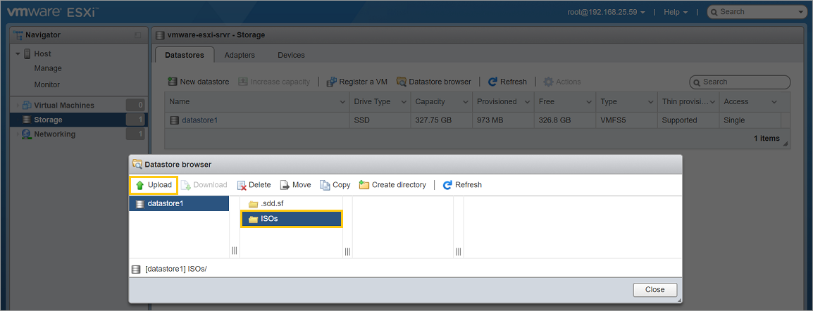
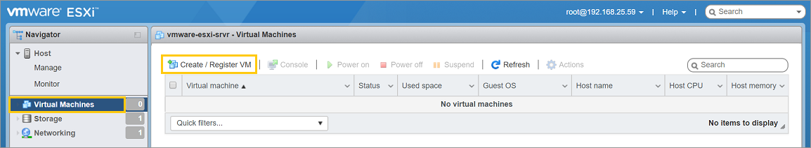
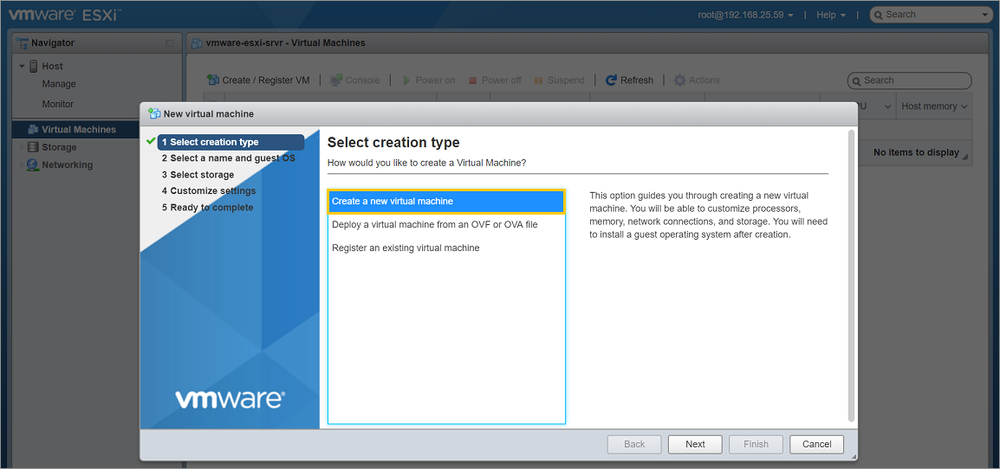
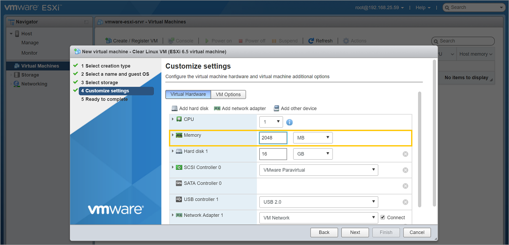

Install Clear Linux* OS as a VMware* ESXi guest OS
This page explains how to create a new VM and manually install Clear Linux* OS on the new VM with VMware ESXi 6.5.
- Overview
- Download the latest Clear Linux OS installer ISO
- Upload the Clear Linux OS installer ISO to the VMware server
- Create and configure a new VM
- Install Clear Linux OS into the new VM
- Reconfigure the VM’s settings to boot the newly-installed Clear Linux OS
- Power on the VM and boot Clear Linux OS
- Related topics
Overview
VMware ESXi is a type 1 bare-metal hypervisor that runs directly on top of server hardware. With VMware ESXi, you can create, configure, manage, and run Clear Linux OS virtual machines in the cloud.
Manually installing Clear Linux OS on a new VM gives additional configuration flexibility during installation. For example: alternate disk sizes, number of partitions, pre-installed bundles, etc.
If you prefer to use a preconfigured Clear Linux OS VMware image instead, refer to Run preconfigured Clear Linux* OS image as a VMware* ESXi guest OS.
Note
VMware also offers a type 2 hypervisor designed for the desktop environment, called VMware Workstation Player. Refer to Run pre-configured Clear Linux* OS image as a VMware* Workstation Player guest OS or Install Clear Linux* OS as a VMware* Workstation Player guest OS for more information.
Visit Clear Linux* OS image types to learn more about all available images.
Download the latest Clear Linux OS installer ISO
Get the latest Clear Linux OS installer ISO image from the image repository.
Look for clear-[version number]-installer.iso.xz.
We also provide instructions for downloading and verifying a Clear Linux ISO. For more information, refer to Download, verify, and decompress a Clear Linux* OS image.
Upload the Clear Linux OS installer ISO to the VMware server
Connect to the VMware server and log into an account with sufficient permission to create and manage VMs.
Under the Navigator window, select Storage. See Figure 1.
Under the Datastores tab, click the Datastore browser button.

Figure 1: VMware ESXi - Navigator > Storage
Click the Create directory button and name the directory ISOs. See Figure 2.

Figure 2: VMware ESXi - Datastore > Create directory
Select the newly-created directory and click the Upload button. See Figure 3.
Figure 3: VMware ESXi - Datastore > Upload ISO
Select the decompressed Clear Linux OS installer ISO file
clear-[version number]-installer.isoand upload it.
{kind=link}
Create and configure a new VM
In this section, you will create a new VM, configure its basic parameters such as drive size, number of CPUs, memory size, and then attach the Clear Linux OS installer ISO.
Under the Navigator window, select Virtual Machines. See Figure 4.
In the right window, click the Create / Register VM button.
Figure 4: VMware ESXi - Navigator > Virtual Machines
On the Select creation type step:
Select the Create a new virtual machine option. See Figure 5.
Click the Next button.
Figure 5: VMware ESXi - Create a new virtual machine
On the Select a name and guest OS step:
Give the new VM a name in the Name field. See Figure 6.
Set the Compatability option to ESXi 6.5 virtual machine.
Set the Guest OS family option to Linux.
Set the Guest OS version option to Other 3.x or later Linux (64-bit).
Click the Next button.

Figure 6: VMware ESXi - Give a name and select guest OS type
On the Select storage step:
- Accept the default option.
- Click the Next button.
On the Customize settings step:
Click the Virtual Hardware button. See Figure 7.
Expand the CPU setting and enable Hardware virtualization by checking Expose hardware assisted virtualization to the guest OS.

Figure 7: VMware ESXi - Enable hardware virtualization
Set Memory size to 2048MB (2GB). See Figure 8.
Figure 8: VMware ESXi - Set memory size
Note
The Clear Linux OS installer ISO needs a minimum of 2GB of RAM to work properly. You can reduce the memory size after the installation completes if you want, because a minimum Clear Linux OS installation can function on as little as 128MB of RAM. See Recommended minimum system requirements for more details.
Set Hard disk 1 to the desired capacity. See Figure 9.

Figure 9: VMware ESXi - Set hard disk size
Note
A minimum Clear Linux OS installation can exist on 600MB of drive space. See Recommended minimum system requirements for more details.
Attach the Clear Linux OS installer ISO. For the CD/DVD Drive 1 setting, click the drop-down list to the right of it and select the Datastore ISO file option. Then select the Clear Linux OS installer ISO
clear-[version number]-installer.isothat you previously uploaded to the VMware server. See Figure 10.
Click the Next button.
Click the Finish button.
{kind=link}
{kind=link}
{kind=link}
{kind=link}
Install Clear Linux OS into the new VM
Power on the VM.
Under the Navigator window, select Virtual Machines. See Figure 11.
In the right window, select the newly-created VM.
Click the Power on button.
Click on the icon representing the VM to bring it into view and maximize its window.

Figure 11: VMware ESXi - Navigator > Virtual Machines > Power on VM
Follow the Install from live image guide to complete the installation of Clear Linux OS.
After the installation is complete, follow the Clear Linux OS instruction to reboot it. This will restart the installer again.
Reconfigure the VM’s settings to boot the newly-installed Clear Linux OS
After Clear Linux OS has been installed using the installer ISO, it must be detached so it will not run again. Also, in order to boot the newly-installed Clear Linux OS, you must enable UEFI support.
Power off the VM.
Click the Actions button - located on the top-right corner of the VM’s windows - and go to the Power setting and select the Power off option. See Figure 12.

Figure 12: VMware ESXi - Actions > Power off
Edit the VM settings.
Click the Actions button again and select Edit settings. See Figure 13.

Figure 13: VMware ESXi - Actions > Edit settings
Disconnect the CD/DVD to stop it from booting the Clear Linux OS installer ISO again.
Click the Virtual Hardware button. See Figure 14.
For the CD/DVD Drive 1 setting, uncheck the Connect checkbox.
Clear Linux OS needs UEFI support in order to boot. Enable it.
Click the VM Options button. See Figure 15.
Expand the Boot Options setting.
For the Firmware setting, click the drop-down list to the right of it and select the EFI option.
Click the Save button.
{kind=link}
{kind=link}
Power on the VM and boot Clear Linux OS
After configuring the settings above, power on the VM.
Under the Navigator window, select Virtual Machines. See Figure 16.
In the right window, select the VM.
Click the Power on button.
Click on the icon representing the VM to bring it into view and maximize its window.
{kind=link}